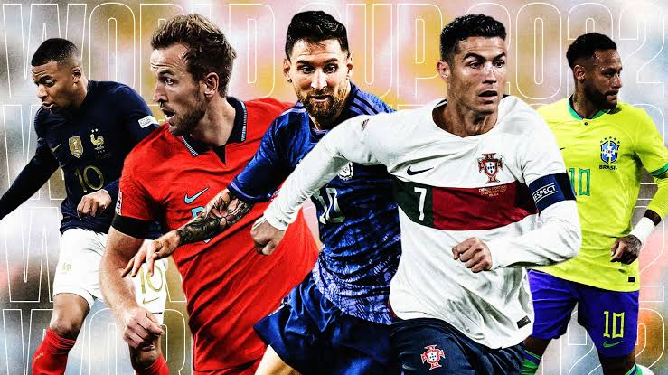
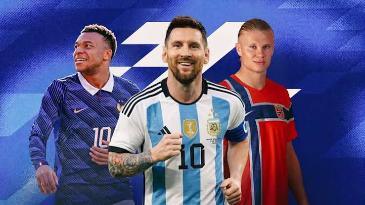

Koleksi Favorit
Legenda di Lapangan Hijau
Tiga pemain pilihan dengan posisi, klub, dan statusnya, disusun rapi dalam satu halaman.
Daftar Pemain Bola Favorit



Gambar 1.1: Pemain bola andalan di klub.
Tabel Koleksi Pemain Bola Favorit
| Foto |
Nama Pemain |
Posisi |
Klub |
Status |
 |
Lionel Messi | Penyerang | Inter Miami |
Aktif |
|
Kevin De Bruyne | Gelandang | Manchester City |
Aktif |
 |
Virgil van Dijk | Bek | Liverpool |
Aktif |
Galeri Kartu Pemain
Lionel Messi
Penyerang bintang Inter Miami asal Argentina.
Status: Aktif
Kevin De Bruyne
Gelandang maestro Manchester City.
Status: Aktif
Virgil van Dijk
Bek tangguh dan kapten Liverpool FC.
Status: Aktif
+ Tambah pemain
Masukkan pemain favorit lainnya
Form Tambah Pemain Bola
Tentang Saya
Halaman ini dikembangkan oleh Rizky Fabian (NIM: 25523208).